Researcher at the Institut de Ciències del Mar (ICM-CSIC), Barcelona, in the EMERGE group of the Department of Renewable Marine Resources. I obtained a PhD in Biorobotics at the BioRobotics Institute of Scuola Superiore Sant'Anna (Pisa, 2019), with a visiting period at the NASA Jet Propulsion Laboratory.
My research interests lie in the design and control of robotic systems, with a primary focus on marine robotics. My work spans two synergistic areas: robotics for marine science, developing solutions for exploration, monitoring and intervention in underwater environments; and bioinspiration, extracting principles from nature's designs to inform novel robotic solutions, such as the underwater legged robot SILVER2.
Google Scholar · ORCID · GitHub · ICM-CSIC
Contact: gpicardi@icm.csic.es
"la Caixa" Junior Leader Fellow at the Institut de Ciències del Mar (ICM-CSIC), Barcelona — ICM-CSIC
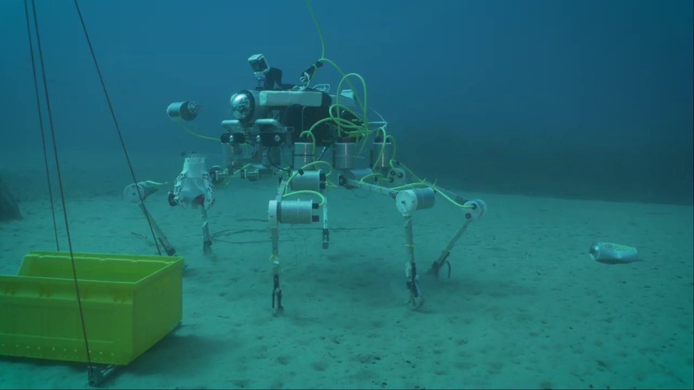
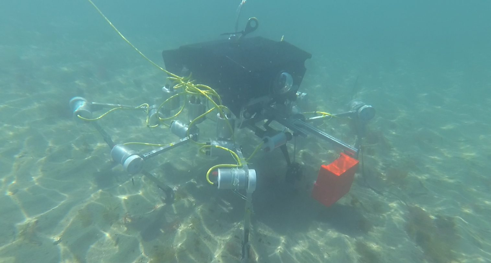
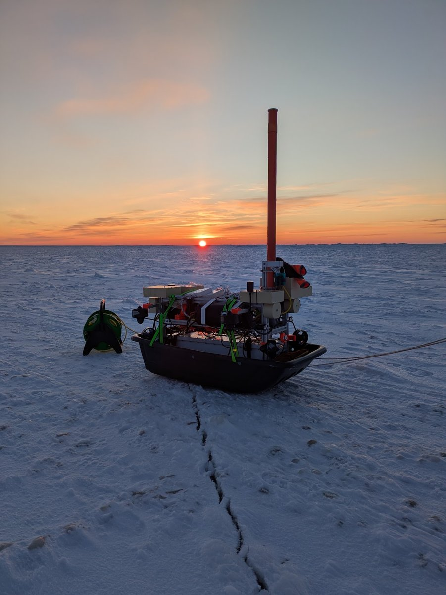
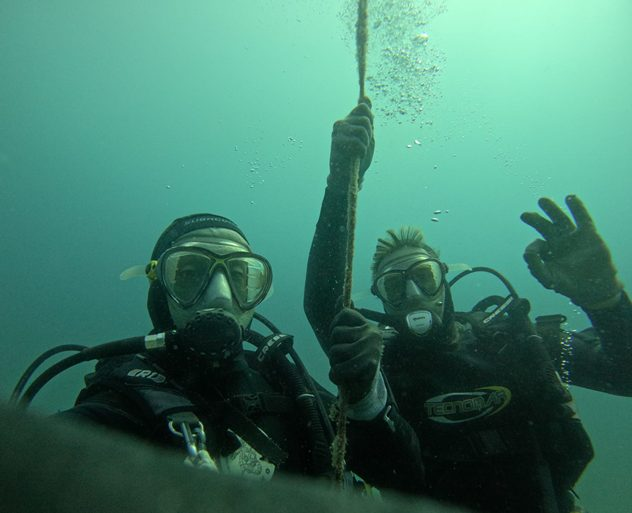
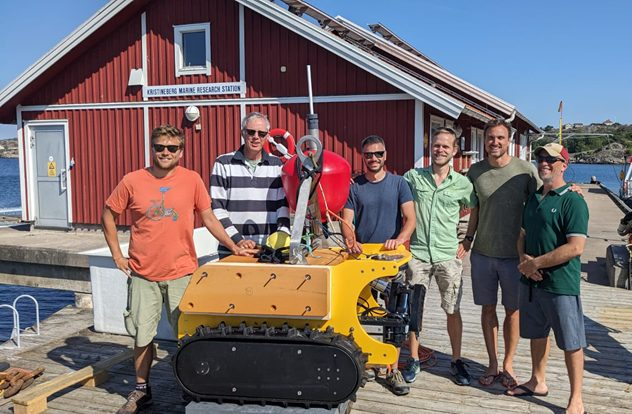
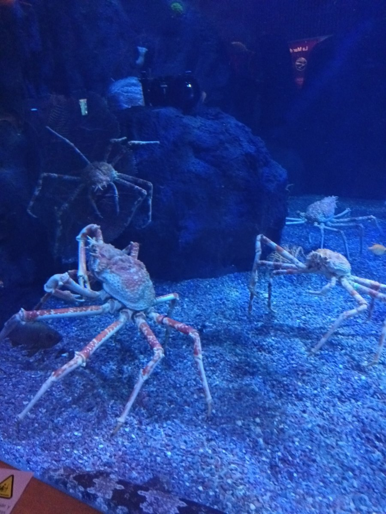
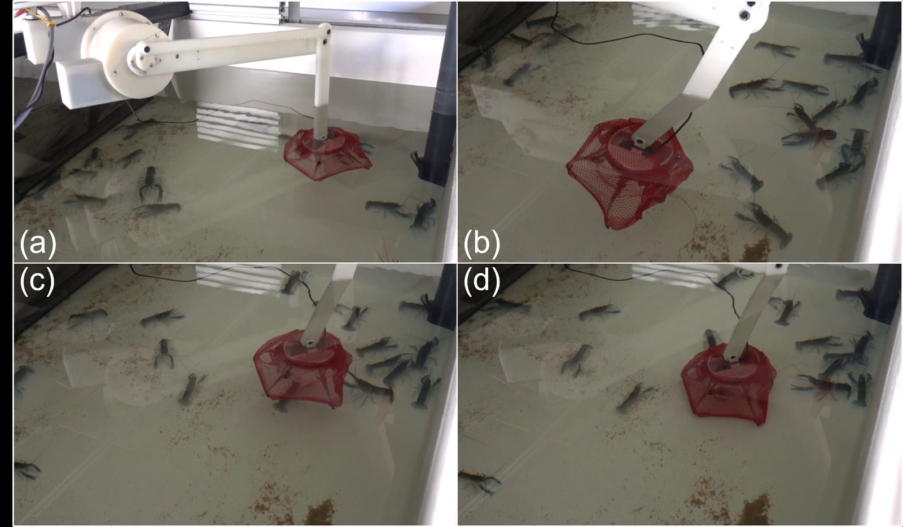
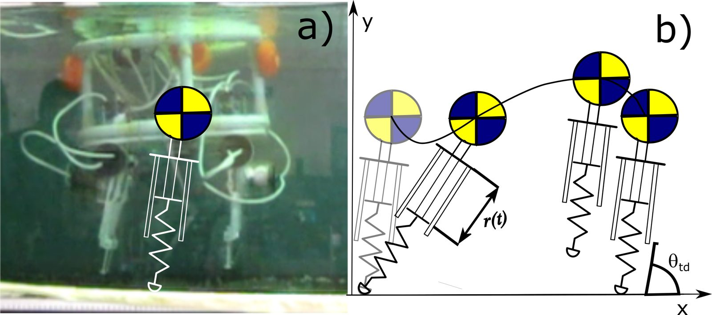
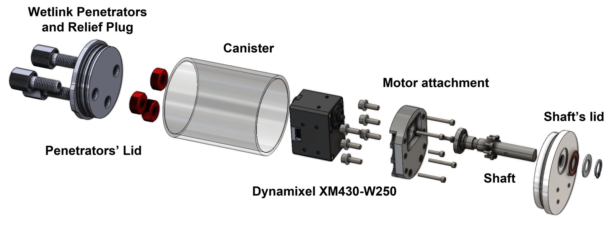
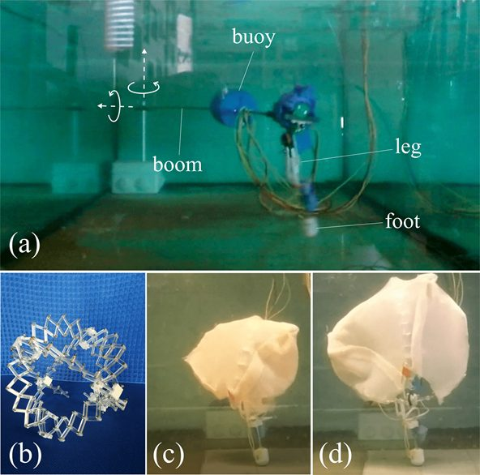
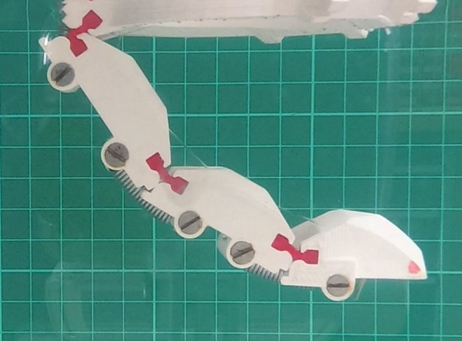
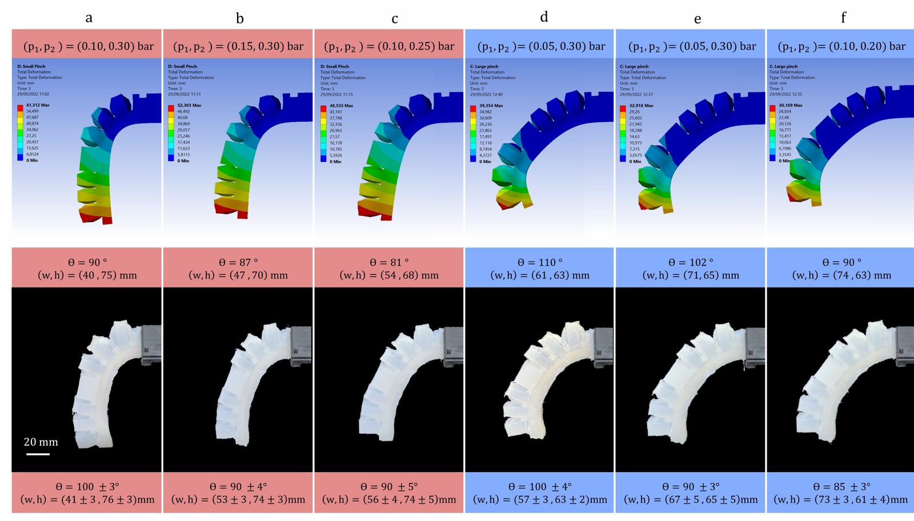